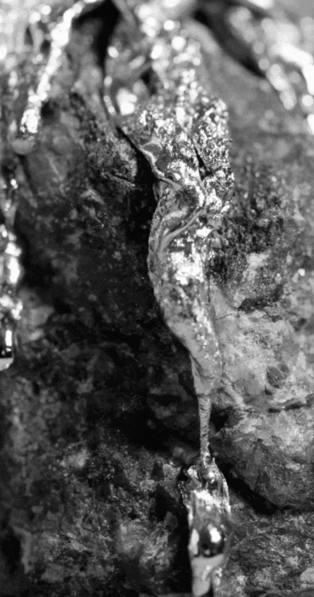
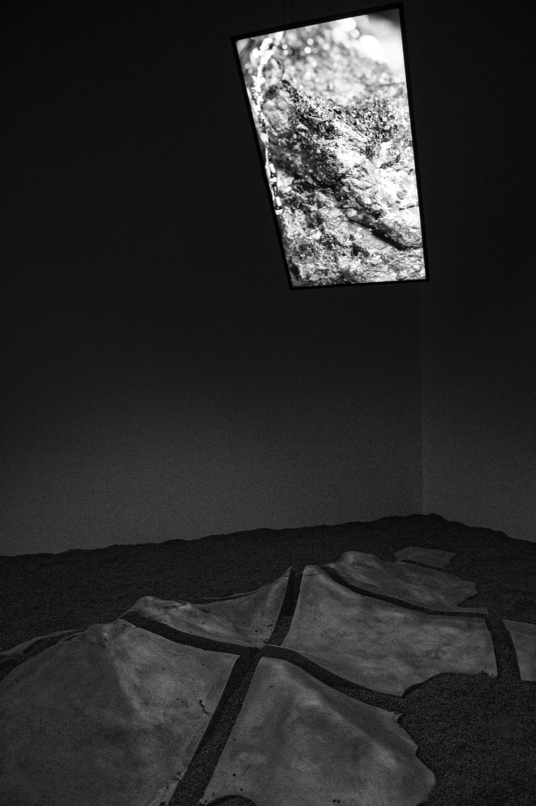
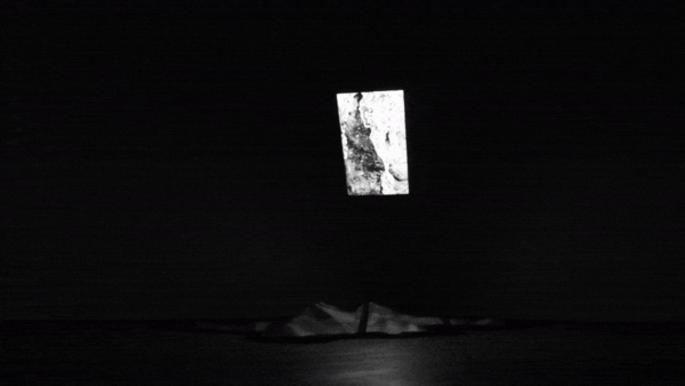
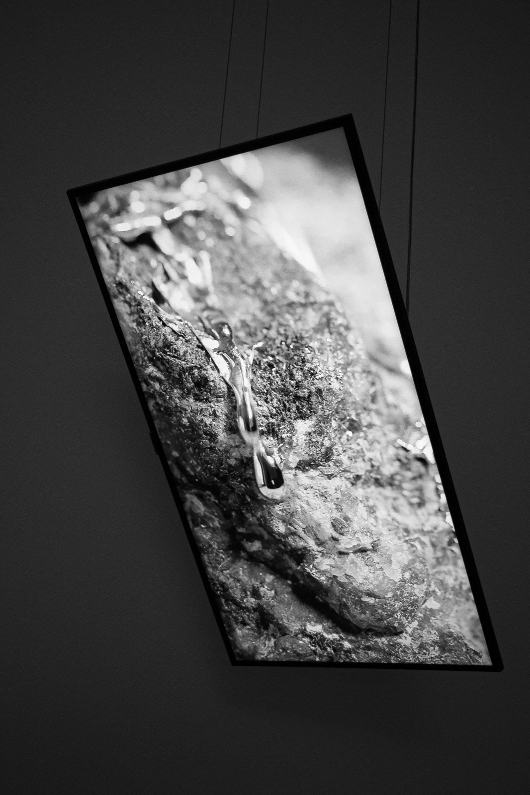
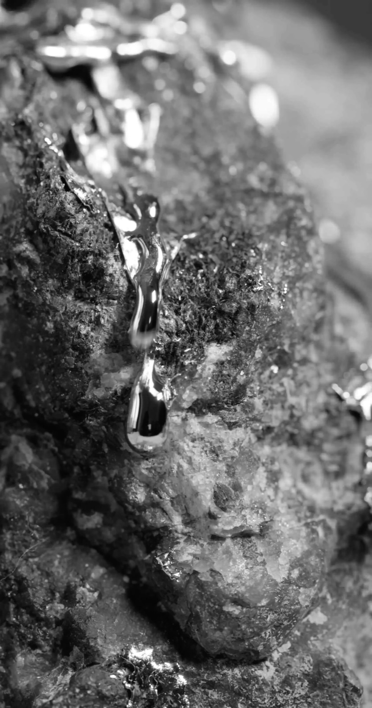
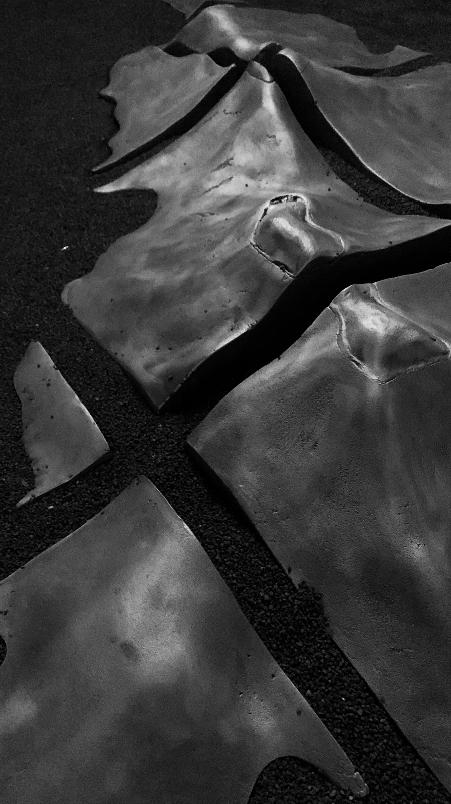
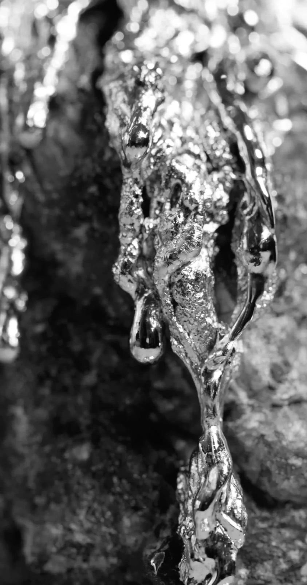
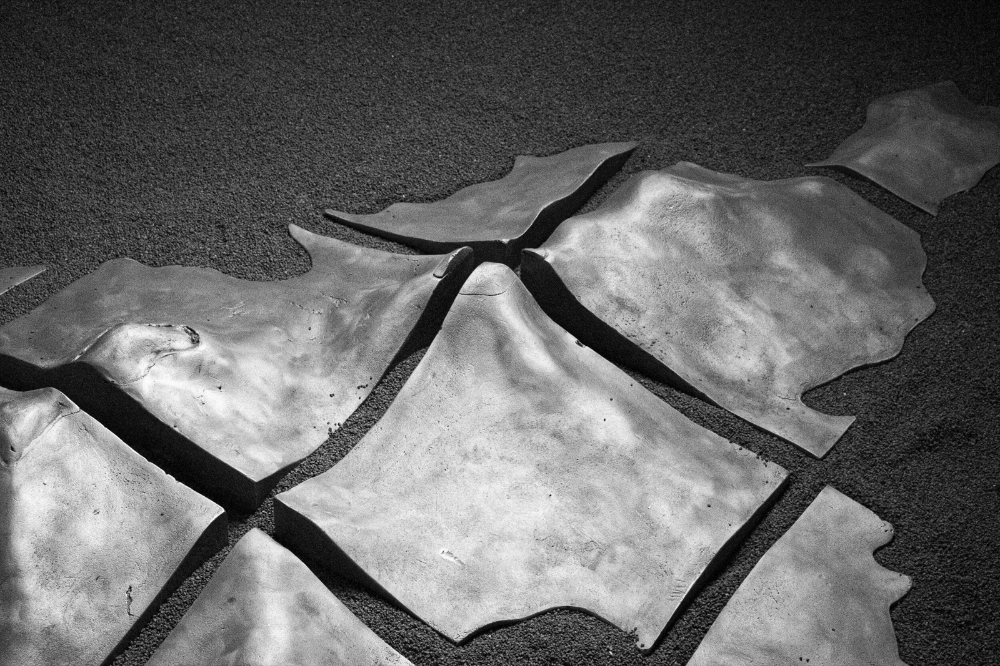
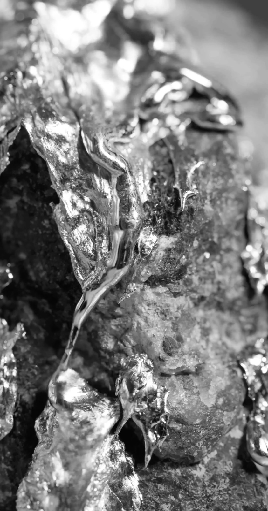
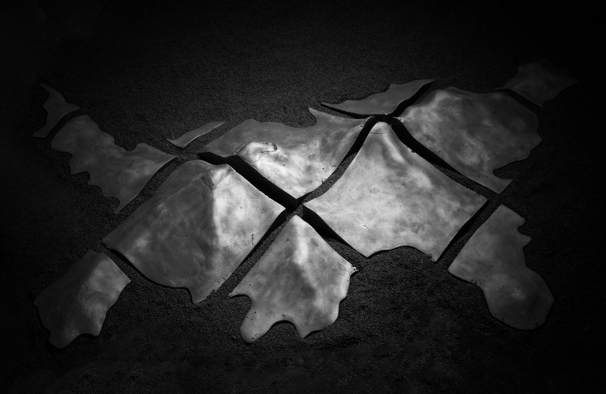

2021 · Video, Installation, Counter-mapping · Versus Art Project, Istanbul
Possibilistic Grounds (Olasılıksal Zeminler)
Video installation on an LED screen and aluminium elements reflecting on how digital mapping and land records since the 1960s produce virtual images of the earth, using lead pouring to show fluidity in landforms.
- No.
- 2102
- Date/s
- 2021
- Type/s
- Video, Installation, Counter-mapping
- For
- Versus Art Project
- Place
- Versus Art Project, Istanbul
- Status
- realised
- Shown
- Fluid Dynamics, Versus Art Project, Istanbul, 18.04.—08.05.2021
- Links
- original ↗










